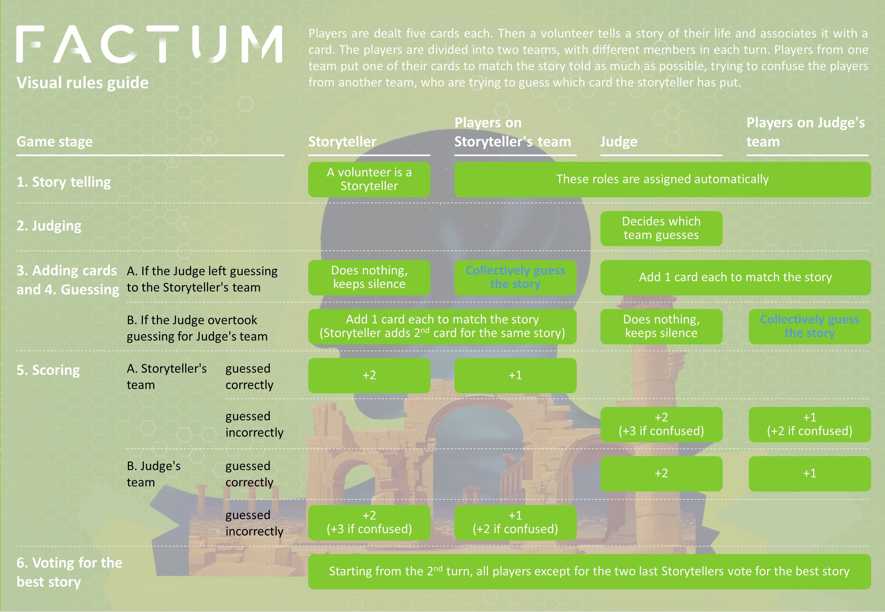

Factum
Board Game Arena 官方规则文档

Rules for the online version
Factum is a board game where you get to tell real stories of your life and connect them with cards illustrating different plots. The other players will be trying to guess these cards. It is a game for 4-12 players that allows players to get to know each other from a new perspective.
Players are dealt five cards each. Then a volunteer tells a story of their life and associates it with a card. The players are divided into two teams, with different members in each turn. Players from one team put one of their cards to match the story told as much as possible, trying to confuse the players from another team, who are trying to guess which card the storyteller has put.
The main game cycle has 6 stages.
1. Story telling
a. Volunteering to be a storyteller
The first player to start the game is the volunteer who remembered a story from their life that fits one of their cards, and the first one to declare this by pressing a corresponding button. This player becomes the storytelling team captain.
b. Teams split
After the volunteering storyteller has been chosen, the players (including the storyteller) are automatically split into two teams with equal number of players. If the number of players is odd, then the team of the storyteller has one player more.
c. Actual telling of a story
The storytelling captain tells everyone their story. This can be done in different ways:
- Via BGA chat
- By voice via BGA video chat function
- By voice via Zoom / Discord / Skype video chat run in parallel with a BGA game
After the story is finished, the storyteller formally acknowledges this by pressing a corresponding button.
2. Judging
One of the players of the opposite team, the first one to volunteer, becomes the judge and the captain of this team. The judge looks at the storyteller's card and decides whose team will be guessing this story - the storyteller's or the judge's. • If the judge thinks that the card is too obvious in relation to the story, it usually makes sense to let the judge's team guess it. The storyteller's team would be trying to confuse the judge's team then • If the judge thinks that the card would be difficult to guess, it makes sense to leave guessing to the storyteller's team. The judge's team would be trying to confuse the storyteller's team
3. Adding cards
All players of the confusing team (the team that is not guessing) choose one card that best reflects the essence of the story out of their hand and add it to the storyteller's card. If it is the judge's team, the judge also adds their card. If it is the storyteller's team, the storyteller also adds another cards to their own story (the second one in the same turn). The goal of the confusing team is to make the opponent choose their card instead of the storyteller's one. Therefore, they should try to find a card that matches the story as closely as possible. If there are less than 5 cards (including the storyteller's card), some random cards are added from the deck to make it 5 cards.
4. Guessing
All cards are shuffled and laid face up on the table. The guessing team mutually decide which card was that of the storyteller. They have to come to a decision by the majority of votes. The storyteller and the judge must remain silent, but it is Ok for the members of the opposite team to say something and to try to confuse the guessers with their comments.
5. Scoring
If the players in the guessing team guess the storyteller's card correctly, they all win and get 1 point each. If they guess incorrectly, the players of the confusing team win and get 1 point each.
If you are the captain of the winning team, a storyteller or the judge, you get 1 extra point, i.e. 2 points in total.
If your card was mistakenly chosen by the guessing team, you get 1 extra point. To sum up:
- You are a player in the winning team: +1 point
- You are the captain of the winning team (storyteller or the judge): +1 point
- You added the card that has confused the guessing team: +1 point
- Your story was chosen as the best story (see next section): +3 points
So the maximum number of points that can be earned in one turn is 6. For example, you are the storyteller, the guessing was overtaken by the judge's team, you added another card to your own story and this second card was chosen by the guessing (judge's) team. Also, after the voting, your story has beaten a previous story. You get 1 point as a member of the winning (confusing) team; 1 extra point as a captain (the storyteller); 1 point as the one who confused the guessing team with your card; and 3 points as a teller of the best story.
6. Voting for the best story
After the second move and all subsequent moves, the players secretly vote for the best story. They compare the current story with the previous one. It is the quality of the story itself that should be evaluated, not the card or the degree to which the story matches the card. Neither the storyteller of the current story or the storyteller of the previous one participate in the voting. Thus, the current story is always compared to the winning story of all past voting rounds: the second story competes with the first, the winning story between the first two competes with the third, the winning story between the first three competes with the fourth, and so on.
The storyteller whose story is choses by the majority of votes gets 3 points. If the voting is tie, the previous holder of the title retains it (but does not get additional 3 points). These 3 points are "transferable": if another storyteller's story is chosen, this new storyteller gets 3 points and the previous storyteller has 3 points subtracted from their score.
End of turn
The cards played in this turn are discarded into the discard pile. Each player gets new cards to make their hand equal 5 cards. If the deck of cards runs out, the discard pile is shuffled in and used again. A new turn begins and a new volunteer is sought. The same player can't be a storyteller twice in a row, but all other players are welcome.
End of game
The player that earns 15 points first is the winner.
Hints and Tricks
- The right balance: The link between the story and the card should not bee too obvious (otherwise, the judge of the opposite team will "overtake" it). But it shouldn't bee too difficult either. The balance comes with practice.
- Link to emotional summary: Usually, it is a bad tactics to link the story to a specific detail on the card. For example if you see a cat in the picture and your story is about cats or mentions them. Although there might be exceptions, this usually leads to the opponent's team winning the scores. Instead, try finding a relation between the "emotional summary" of the story and the "emotional summary" of the card. For example, you story is about the joy of obtaining the driver's license. The bad choice would be a card about cars. The good choice would be a card about a sense of triumph.
- Benefits of being a captain: The captain's role allows you to earn additional points - both as a storyteller and as a judge, so whenever possible, try to be the first to volunteer.
- The trick with two similar cards: There are some additional tactics how captains can earn extra points:
- As a storyteller, if you have two similar cards, choose the less obvious (but still obvious) card as your main card; if the judge overtakes the guessing to their team, you get a chance to add your second, more matching card to your own story and try to lure the opposite team into choosing your second card, thus losing the turn to your team and bringing you 3 points
- As a judge, if you see that you have in your hand a card that matches the story even better than the storyteller's card, leave guessing to the storyteller's team, add your card and hope that the opponents will choose your card instead of the storyteller's.